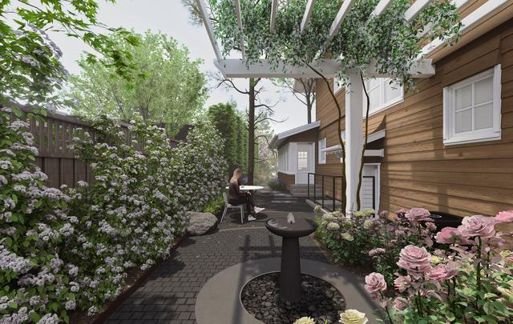
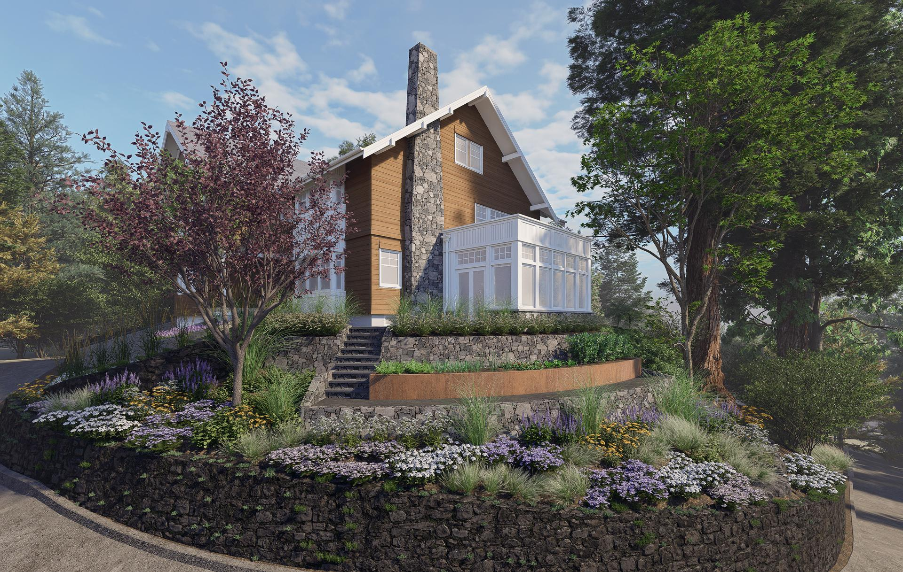
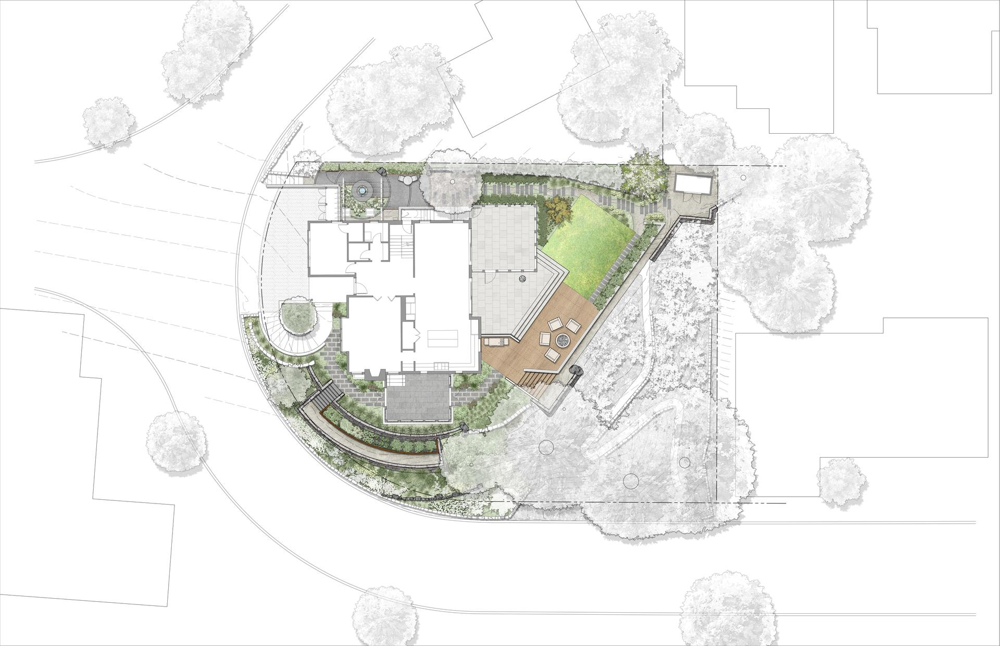
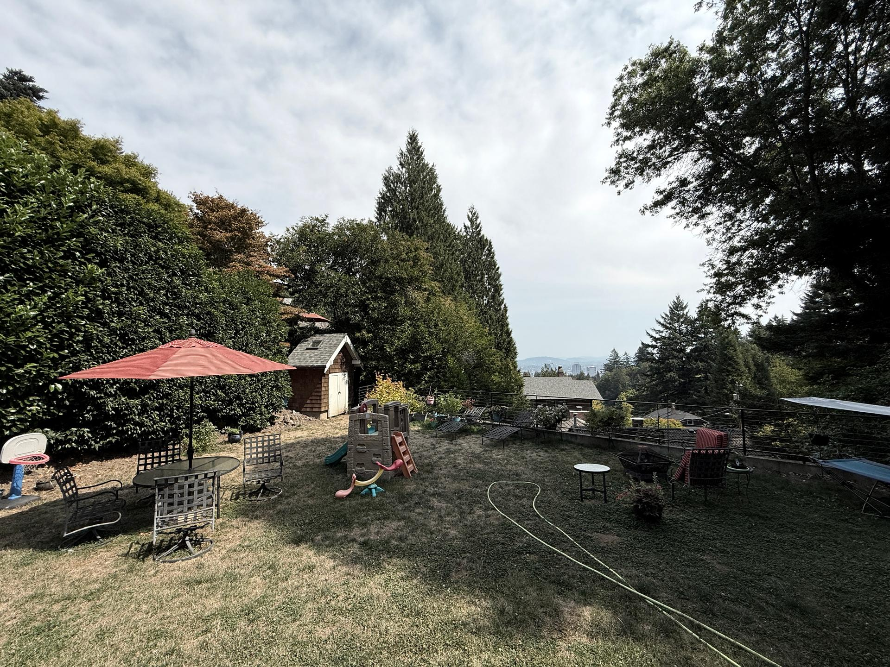

Hillside Residence
A landscape transformation for a Craftsman-influenced hillside
residence in Portland's West Hills, the design reorganizes a
series of existing terraces into distinct but connected outdoor rooms
while preserving mature trees, stone retaining walls, and the
site's established character. New improvements include an
expansive wood deck and fire pit overlooking downtown Portland, an
intimate rose garden courtyard with arbor and water feature, a
terraced vegetable garden, and a sequence of basalt stone,
cobblestone, and gravel paths that connect the property.
The material palette introduces contemporary detailing while remaining
grounded in the home's Craftsman character and the established
hillside landscape. Thermally modified ash decking, stone slab paving,
boulders, weathering steel, gravel, and dry-stacked stone create a
restrained framework for layered planting that softens the
architecture, reinforces privacy, and preserves long views from the
backyard terrace.
Location: Portland, OR
Collaborators: Christie Architecture, Hamish Murray Construction
Status: Under Construction
Collaborators: Christie Architecture, Hamish Murray Construction
Status: Under Construction



